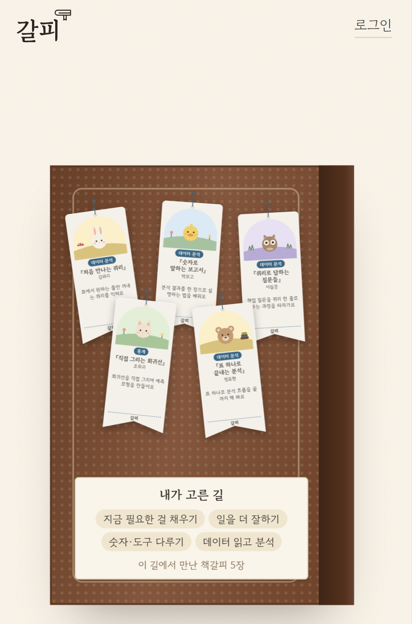
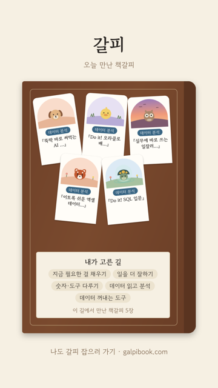

버튼은 [↗ 결과 공유하기] 하나. 누르면 아래에서 시트가 올라와요. '브라우저에서 열기'는 없어요.

주 버튼 하나 + 공유 버튼 하나
결과 공유하기

인스타 스토리로 → 공유창에서 인스타 → 스토리 편집 화면으로 바로. 링크 공유 → 카톡 등 공유창(없으면 복사)
결과 공유하기
이미지를 길게 눌러 저장한 뒤
인스타 스토리에 올려 주세요
이 브라우저가 이미지 공유를 못 하면 자동으로 이 모양. 앱 이름으로 나누지 않고 실제로 되는지를 봐요